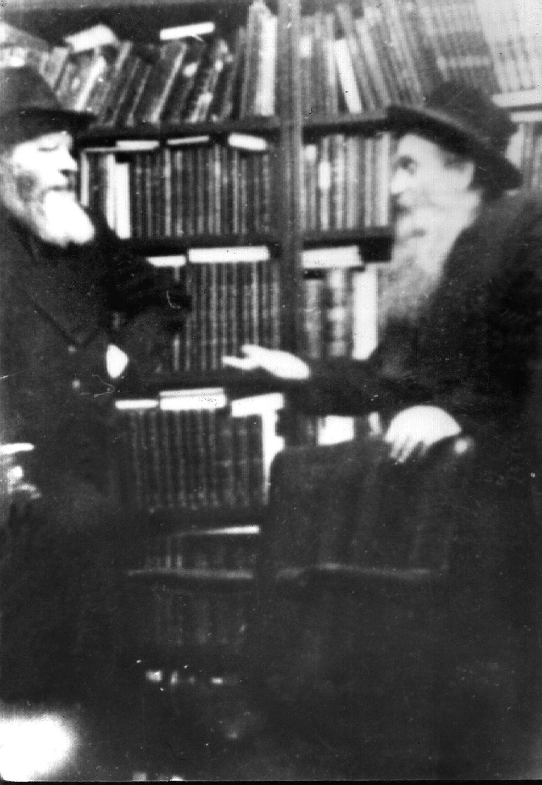

Signed on the Rebbe’s Letterhead
After the JDC refuses to support the Chabad activities in Morocco, an independent fundraising effort is launched * Rabbi Binyomin Gorodetsky signs two rare and unique letters on the Rebbe’s letterhead, and manages to secure the financial support of the JDC * Part Three

This week’s installment will focus on how Chabad proceeded to secure the JDC support, and the rare and unique letters written by Rabbi Binyamin Gorodetsky on the Rebbe’s letterhead!
These fascinating documents are part of the JDC Archives (which were digitized and uploaded online, thanks to a grant from Dr. Georgette Bennett and Dr. Leonard Polonsky CBE).
Fundraising In The USA
On Rosh Chodesh Nissan 5711, Merkos L’inyonei Chinuch, the educational arm of Chabad Lubavitch, issued a “Pesach appeal” dedicated to the educational work in North Africa, stating:
…The terrible poverty of our brethren there, deprives the children of even an elementary Jewish education. Yet their traditional love for Torah and devotion to our people is a citadel which must be preserved at all costs.
The MERKOS L’INYONEI CHINUCH – the central world organization for Jewish education, is doing pioneer work in North Africa. It established there a Teachers seminary, a Yeshiva, Yeshiva-Ktanas, Talmud-Torahs for boys and ones for girls, evening courses for workers. These institutions are named “OHOLEY JOSEF YITZCHOK LUBAVITZ” – after their great founder of sainted memory. They have won recognition and fame.
To help support these sacred institutions, enlarge them, and found more like them – is our appeal to you, dear fellow Jews and Jewesses… Send your donation immediately.
JDC Worries: Chabad Will Expand Regardless
On April 17, 1951 (Yud Aleph Nissan 5711), Mr. William Bein, who served for some period of time as the head of the JDC office in Morocco writes to Mr. Judah Shapiro, head of the educational department of the JDC in Paris, addressing the Chabad appeal letter, and stating that Chabad will expand regardless, the only question is whether the JDC will support Chabad or Chabad will fundraise themselves…:
…my answer was made much easier because of a Passover circular issued country-wide by the Lubavitcher, the original of which we are enclosing. It speaks for itself.
I have to repeat myself that I have the greatest admiration for the integrity and efficiency of the Lubavitcher group…
There is no fear in our minds concerning a precedent. The precedent may refer only to the Lubavitcher. If we will now start to subsidise two of their institutions, the will definitely expand and will ask for further subsidizing of additional institutions. As I pointed out in my previous correspondence, this represents an important decision to be made by the JDC, – either we will start to subsidise their institutions in Morocco, with or without a limit, or they will create institutions and will begin raising funds for the purpose (see circular)…
On The Rebbe’s Letterhead
It is clear that Rabbi Gorodetsky was aware of the storm that he created with the fundraising letter (and maybe that was the purpose of the letter…), and so, on the same day, he sent a letter to the head of the JDC office in Paris, Mr. W. Beckelman, asking for the JDC to support the Chabad activities. This letter was signed on the Rebbe’s letterhead!
I wish to refer to our conference at the end of March in Paris, when I gave you a report on our work in North Africa. I recall with gratification that you received the report favorably and expressed your desire to be of utmost assistance, but wished to have a little time to think about it.
Inasmuch as you mentioned ten days in this connection, I have waited to hear from you, but presumably pressure of work caused a delay. I would not have pressed you for your early and favorable decision, were it not for the fact that our financial position is getting more difficult and our work is suffering thereby.
I therefore cabled you yesterday as follows:
EAGERLY AWAITING EARLY FAVORABLE DECISION REGARDING OUR WORK IN NORTH AFRICA ESPECIALLY AS OUR FINANCIAL POSITION IS VERY STRINGENT STOP THANKS HAPPY PASSOVER –
I do hope you will give this matter your earliest attention and will let us know your favorable decision, for which please be assured of our sincere appreciation.
The JDC Agrees: We Will Fund Six Months
During the next week, the JDC agreed to support Chabad activities in Morocco. In a letter dated April 24, 1951 (18 Nissan, 5711), Mr. Judah Shapiro (JDC Paris) writes to Rabbi Gorodetsky:
Mr. Beckelman has discussed with me the entire subject of JDC assistance to the program in Morocco with which your organization is involved. There are several aspects of this question which require further study and investigation on our part. I am writing after further review of the matter with Mr. Beckelman, following your cable, in the knowledge that you are eager to have some statement of our position respecting your request.
Our financial commitments have been made for the first six months of this calendar year, and it is Impossible at this time to increase these during the period until July 1st, 1951. We are, however, prepared to consider assistance to the program in Morocco with which you are associated, for the second half of 1951…
In the meantime, we would appreciate it if you could send us a specific statement of activities in Morocco, the cost of the program, and the amount of participation by the local community.
Chabad: Surprised and Disappointed
On May 3, 1951 (27 Nissan 5711) Rabbi Gorodetsky responded, again on the Rebbe’s letterhead, not with thanks but with “surprise and disappointment” that the support will only begin in July…
… Referring to your letter of April 24th, we are rather surprised and disappointed with the position of the JDC, as stated in your letter, regarding our program in Morocco, especially as Mr. Beckelman had taken a favorable attitude toward the question through our negotiations.
As you know, we started our program in Morocco last June. Since the end of February, when our program was well under way and we turned to the JDC for support of this program, we have been counting on it, in line with our past experience. Now, if the JDC should commence its participation in July 1951, as indicated in your letter, it would mean that we should have to bear the entire financial burden of the program on our shoulders for a full year – a thing we are not able to do, nor would it be fair of us to expect.
We appreciate the fact that the JDC has other financial commitments, but that does not alleviate our burden, nor can this fact justify the JDC’s delay to participate in this program.
We must therefore ask you to reconsider the question with a view to commencing your participation in our work at least as from the beginning of 1951…
Once the support of the JDC was secured, Chabad activities in Morocco expanded in a quick pace, although the JDC had different plans for Chabad. In the next installment we will present the plan of action that the JDC proposed, and the plan of action that Chabad took.
Beis Moshiach (staff). "Signed on the Rebbe’s Letterhead." Beis Moshiach, no. 1005 (January 20, 2016).